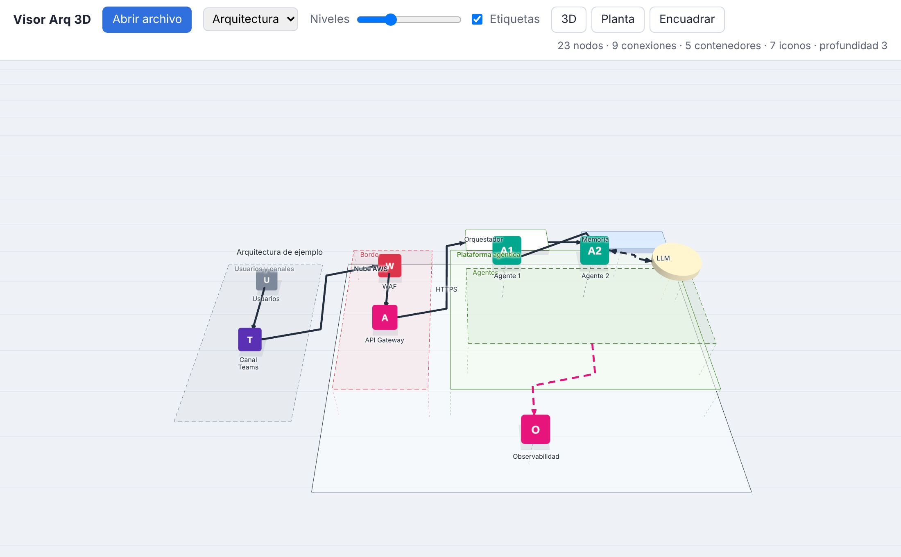

Cómo convierte three.js un archivo en píxeles, qué formatos sabe leer hoy y dónde se engancha un formato nuevo. El caso práctico es .drawio, que three.js no trae y que el visor visor-arq-3d ahora importa.
Todo loader de three.js sigue el mismo contrato: descarga con FileLoader, traduce el contenido en parse() y entrega un grafo de escena. El renderer no sabe de qué formato vino nada: solo ve objetos Object3D con geometría y material. Por eso agregar un formato es escribir un loader, sin tocar el renderer.
renderer.render(scene, camera)scene.updateMatrixWorld() y la cámara.projectObject), descarta lo que queda fuera del frustum y arma listas: opacos, transmisivos y transparentes.renderOrder.WebGLShadowMap).WebGLPrograms elige o compila el shader a partir de ShaderLib y ShaderChunk, según material y luces.BufferGeometry y las texturas, fija uniforms y emite drawElements / drawArrays (instanciados si aplica).RenderObjects, RenderLists).NodeBuilder traduce el grafo de nodos a WGSL, o a GLSL si cae al backend webgl-fallback.WebGPUBackend o WebGLBackend) crea pipelines y bind groups y graba los comandos.Object3D a cualquiera de los dos.El núcleo (src/loaders) solo trae infraestructura y el formato JSON propio. Casi todo lo demás vive como addon en examples/jsm/loaders y se importa desde three/addons/….
Ningún formato coincide con ese filtro.
Exportadores (examples/jsm/exporters): GLTF, OBJ, STL, PLY, USDZ, Draco, EXR y KTX2. Sirven para el camino inverso, por ejemplo exportar el diagrama 3D a .glb.
Un loader extiende THREE.Loader, descarga con FileLoader y traduce el contenido en parse(). El resultado es un Object3D que cualquier renderer dibuja. Este es el esqueleto del DrawioLoader del visor:
export class DrawioLoader extends THREE.Loader<DrawioLoadResult> {
load(url, onLoad, onProgress, onError) {
const loader = new THREE.FileLoader(this.manager);
loader.setResponseType('text');
loader.load(url, (text) => this.parse(text).then(onLoad, onError), onProgress, onError);
}
async parse(text: string) {
const document = await parseDrawio(text); // XML mxfile → modelo intermedio
const pages = document.pages.map((p) => buildDrawioPage(p)); // modelo → THREE.Group
return { document, pages };
}
}
// En la app, cada formato es un adaptador registrado:
registry.register({ id: 'drawio', extensions: ['drawio', 'dio', 'xml'], load: … });draw.io es un caso interesante porque es un formato 2D: no trae alturas ni materiales. El importador decide cómo se ve en 3D:
| Elemento draw.io | Objeto three.js | Detalle |
|---|---|---|
Página <diagram> | Group | Una vista por página. Soporta páginas comprimidas (base64 + deflate-raw). |
| Contenedor | Losa translúcida (BoxGeometry) + contorno | Sube un nivel por anidación. Si el archivo no anida de verdad (todo cuelga de la capa raíz), la anidación se infiere por contención geométrica. |
shape=image | Sprite con textura | Iconos SVG o PNG embebidos como data URI, rasterizados a canvas y cacheados por URI. |
| Rectángulo, elipse | Mesh (caja o cilindro bajo) | Color de fillColor, borde de strokeColor; dashed=1 da línea punteada. |
| Texto, etiquetas | CSS2DObject | HTML nítido sobre el canvas, con tamaño proporcional al zoom y ajuste de línea al ancho de la celda. |
| Conector | Line2 + cono de flecha | Puertos exitX/entryX, waypoints y codos ortogonales; la altura se interpola entre los niveles de origen y destino. |

Con el diagrama de arquitectura de prueba (2 páginas) el importador reconoció todo el contenido del archivo: